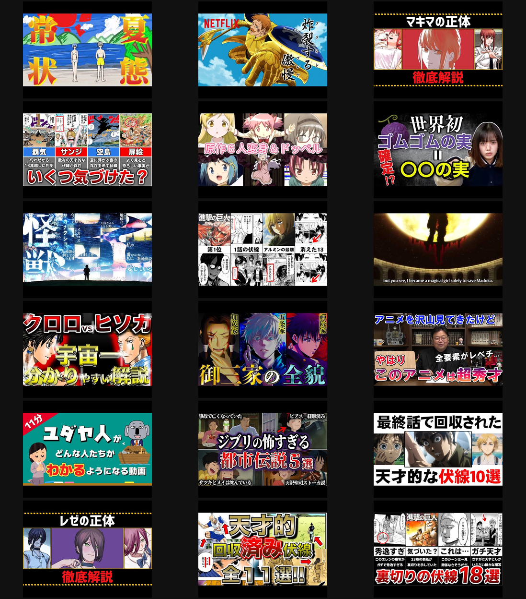
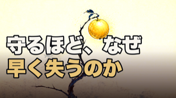

HaQei / アニメと易経 ・ サムネ 世の中ベンチマーク
「世の中で伸びてる考察サムネ」に対して、うちは何が足りないか
YouTube Data APIで「アニメ考察/解説」を再生数順に取得（実際に数百万〜1500万再生の動画）。内部比較でなく世の中基準で見る。
実際に伸びてる18本のサムネ

エヴァ1572万・七つの大罪・チェンソーマン(マキマの正体)401万・ワンピ伏線・進撃(伏線10選)・呪術(御三家の全貌)・岡田斗司夫・ジブリ都市伝説・レゼの正体 等
勝ち筋の要素 × うちで出来るか
| 勝ち筋の要素 | うち | レバー |
|---|---|---|
| 実キャラの顔・カラー原画/漫画コマ（最大の駆動力） | ✗ 不可 | 2026-07-12 法務方針で顔・固有意匠を出さない。ここが最も効くのに封じている＝戦略判断（要オーナー） |
| 極太・多色・縁取りの巨大文字（正体/全貌/○選） | △ 弱い | 今のmake-thumbnail-tierAは上品な白+金。極太縁取り多色に作り替え可＝法務ノーリスクの最大レバー |
| 高彩度・ビビッド・高コントラスト | ◯ 可 | ベース彩度/コントラストを上げる（今回実装） |
| 好奇心ワード（正体・なぜ・○○・全貌） | ◯ 可 | コピーを言い切り+好奇心ギャップへ（今回実装） |
| コラージュ+赤矢印/丸 | ◯ 可 | 複数カット+矢印は実装可（essay型に合うかは要検討） |
制約内で「最大限ベンチマークに寄せた」ep42（顔なし・彩度↑・赤・好奇心ワード）


戦略の選択（ここはオーナー判断）
C（最推奨・法務ノーリスク）：サムネ生成を「極太・多色・縁取りの巨大文字」システムに作り替える。顔を使えなくても、文字の圧を勝ち組水準に上げるのが、うちが100%コントロールできる最大レバー。ep42はこれで作り直す。
A（今すぐ・低コスト）：顔なしのまま彩度↑・赤・好奇心ワードだけ寄せる（上のbench1）。すぐ出せるが天井は低い。
B（要法務判断）：顔・キャラ画の解禁を再検討。勝ち筋の核だが、2026-07-12方針の反転＝翻案侵害リスクを取る決断。世の中の勝ち組の多くも同じ橋を渡っている（黙認されているだけ）。ここは私では決められない。
ご判断ください：
① C（極太縁取り文字システムに作り替え・推奨） ／ A（今のbench1で確定） ／ B（顔解禁を検討＝別途法務）
② ワードは 「守るほど、なぜ／早く失うのか」で良いか（好奇心ワード型）。
Cを選ぶなら、サムネ文字システムを作り替えてep42を再生成し、以後の本編サムネ基準に格上げします。
① C（極太縁取り文字システムに作り替え・推奨） ／ A（今のbench1で確定） ／ B（顔解禁を検討＝別途法務）
② ワードは 「守るほど、なぜ／早く失うのか」で良いか（好奇心ワード型）。
Cを選ぶなら、サムネ文字システムを作り替えてep42を再生成し、以後の本編サムネ基準に格上げします。
一次情報＝YouTube search.list(order=viewCount) 6クエリ・上位61本→再生数上位18。生成＝make-thumbnail-tierA.py。※本編動画本体は既に完成・全ゲート緑（サムネは公開キットの一部で独立に詰められる）。